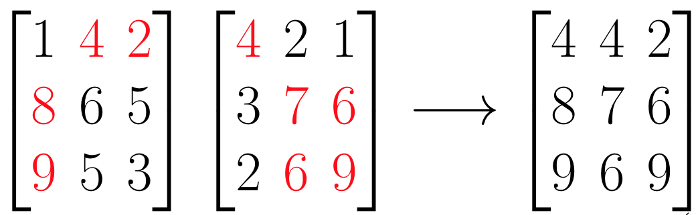

Post-Processing
Post-processing of medical images is an important step when working with medical images. We will learn and implement several methods.
We will set up a new class mt.PostProcessing for our methods:
// Your name <your idm>
package mt;
public class PostProcessing {
}
In the project report you should answer the following questions:
- What is post-processing in context of image processing?
- Why is it important? - Give at least two examples.
Maximum Intensity Projection
We are now looking at a specific post-processing method called maximum intensity projection (MIP), which is an important method for magnetic resonance angiography. The method will be used to prepare our MRI Volumes to single images which can be segmented.
If you scroll through the image sets, you will see bright spots in the different layers. However, we can not see the connected blood vessels in the brain.
That's where the MIP come into play. We are going to implement the following method in our PostProcessing class:
public static Image MaximumIntensityProjection(Volume volume)
The basic mechanism of the MIP is that we are creating a 2D image from our 3D Volume. We are only taking the maximum values of every slice and saving them into our resulting image. We are going through all our different slices and comparing our image values element by element and saving the highest pixel values in our resulting image:
If we scroll again through our MRA image set we see again only small white areas:
After we apply our MIP algorithm we can see all the blood vessels!
Explain in your project report:
- Why and when do we use MRA instead of a normal MRI scan?
- Why do we need a post-processing method like MIP for this image technique?
- Why is it useful to use MIP before segmenting our picture?
Threshold-based Segmentation
As mentioned before, we want to segment our MRI Volume after we used the MaximumIntensityProjection method.
In the beginning we want to implement a simple segmentation method to our PostProcessing class.
public static Image Segmentation (Image image, Integer threshold)
Consider the following points in your report:
- Explain the principle function of the algorithm.
- Why do we use segmentation methods?
- Explain two example applications where segmentation can be useful.
This section should be around one page long.